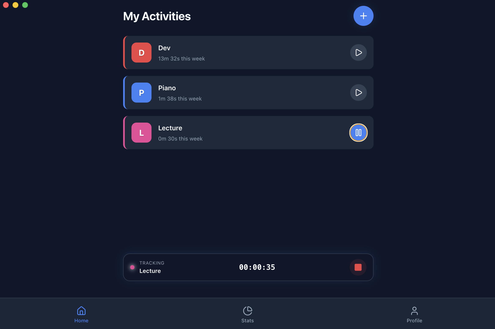
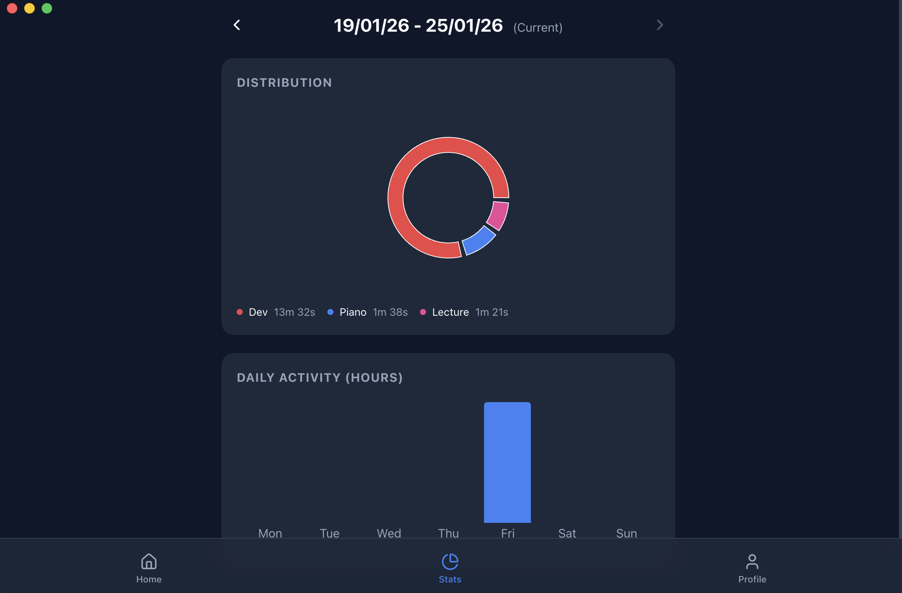
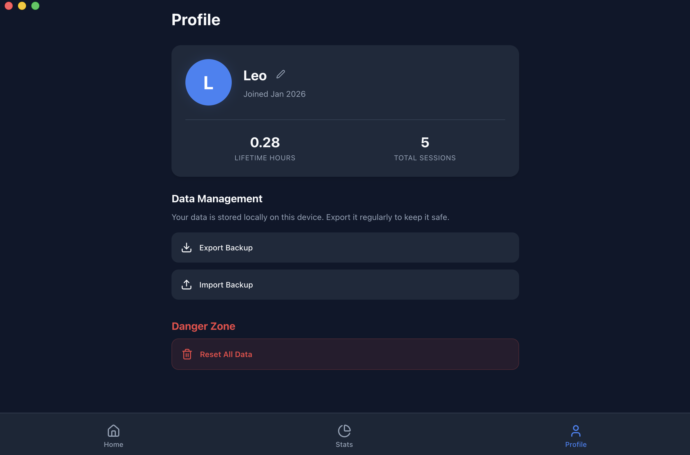

TimeTracker
Application de bureau pour la gestion du temps
Application Desktop 100% Offline développée avec Electron et React.
Conçue pour être légère, privée et multiplateforme (macOS & Windows).

🎯 Le Besoin Initial
Projet réalisé pour un ami musicien qui souhaitait organiser ses sessions de pratique (Piano, Solfège, Composition) sans s'encombrer d'une usine à gaz ou d'une application nécessitant un abonnement.
Contraintes du projet :
- ⚡ Rapidité : Lancer un chronomètre en 1 clic
- 🔒 Privé : Pas de compte, pas de tracking externe, tout reste sur l'ordinateur
- 📊 Visuel : Voir en un coup d'œil où passe le temps chaque semaine
✨ Fonctionnalités Clés
Interface de tracking
Un timer minimaliste et discret conçu pour ne pas distraire. Lancez votre session en un clic, sélectionnez votre activité, et laissez l'application tourner en arrière-plan.
Statistiques complètes
Visualisez votre progression grâce à des graphiques dynamiques. Analysez la répartition de votre temps par catégorie et identifiez vos jours les plus productifs.
Gestion du profil
Personnalisez vos catégories de travail et gérez vos données. Export/import complet au format JSON pour la sauvegarde et le transfert.

Page Statistiques : Graphiques dynamiques avec Recharts.

Page Profil : Gestion des catégories et export de données.
⚙️ Architecture & Technologies
L'application utilise Electron pour encapsuler une application web React moderne. Cela permet d'avoir accès au système de fichiers natif tout en gardant une interface fluide développée avec les standards du web.
⚛️ Store Context
Gestion de l'état global (Timer actif, Logs, Catégories) via React Context API, avec persistance automatique dans le localStorage.
📈 Visualisation
Intégration de Recharts pour générer des graphiques dynamiques : Pie Chart pour la répartition et Bar Chart pour l'intensité quotidienne.
📦 Build & Release
Configuration de scripts npm personnalisés pour builder l'application sur toutes les architectures : Mac ARM/Intel, Windows ARM/Intel.
💾 Gestion des Données
L'application inclut un système d'export/import JSON complet pour permettre la sauvegarde manuelle ou le transfert de données entre deux machines.
Stockage 100% local : Toutes les données sont stockées en JSON sur l'ordinateur. Aucun cloud requis, aucune donnée transmise à des serveurs externes.
// Exemple d'interface de données
interface AppState {
categories: Category[];
logs: TimeLog[]; // Historique complet
userProfile: UserProfile;
activeTimer: {
categoryId: string;
startTime: number;
} | null;
}🔧 Stack Technique
- Electron : Main process (accès système)
- React + Vite : Interface utilisateur
- Context API : Gestion d'état globale
- TypeScript : Typage statique
- Recharts : Graphiques interactifs
- date-fns & uuid : Utilitaires
📦 Plateformes supportées
- Windows ARM / Intel (exe)
- macOS ARM / Intel (dmg)
Découvrir le code source
Voir sur GitHubCode source complet et disponibles